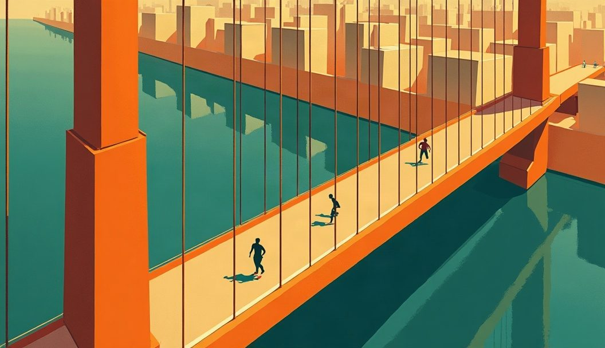

Se deg selv
bli raskere.
Løpsprognose, ukentlig volum og rekker på ett sted.
Progress

Half marathon · your level today
1:49:20
− 4:20 to the goal
Goal 1:45:00
Weekly volume
11 km this week
W1
W2
W3
W4
W5
W6
W7
W8
Planned
Done
14.1 km/h
VMA
10 of 10
Sessions done
100 %
Consistency
2 weeks in a row
Your best: 2 weeks
Today
Plan
Coach
Progress
− 4:20 til målet
Halvmaraton · 1:45:00
2 uker på rad
10 av 10 økter